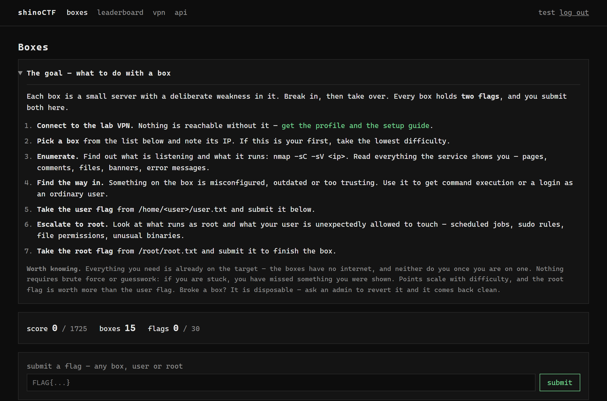
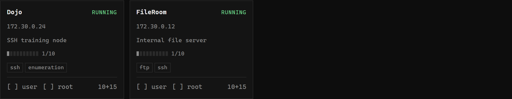
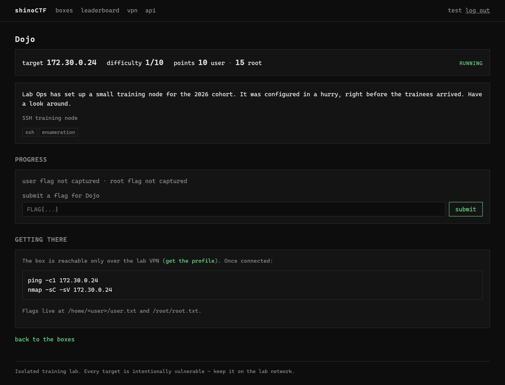
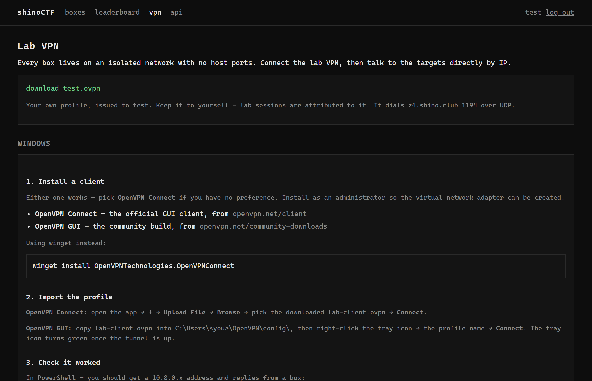
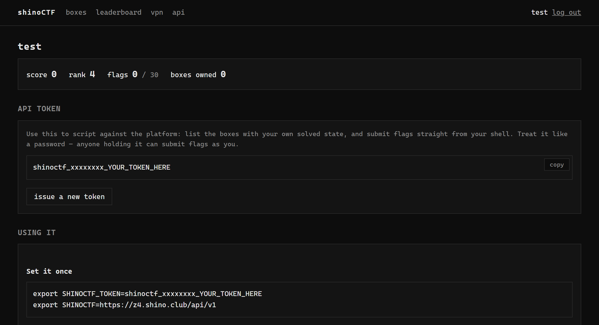
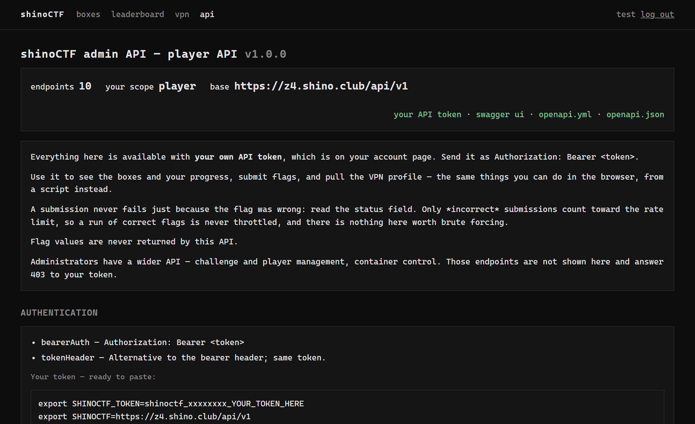

ラボ環境 ／ コマ1 冒頭のオリエンで実施
z4.shino.club の使い方
本ゼミの標的はすべて z4.shino.club（shinoCTF）上のラボにある。 コマ1 の冒頭でこのページに沿って全員でセットアップする。
ポータルの全ページ下部に明記されているとおり —
“Isolated training lab. Every target is intentionally vulnerable — keep it on the lab network.”
標的はすべて意図的に脆弱に作られている。ラボネットワークの外に出さない。
攻撃の実行はラボ内のみ。これは本ゼミの実施ルールでもある。
1接続の全体像
手を動かす前に、自分がどこにいて、どこへ繋ごうとしているのかを把握しておく。 トラブルの大半は「どの経路が切れているか分からない」ことから来る。
ブラウザ → ポータル（インターネット）
VPN なしで繋がる。標的一覧・フラグ提出・VPN プロファイルの取得・API トークンの確認はすべてここ。 ポータルが見えることと標的に届くことは別物なので混同しない。
自分の環境 → 標的（VPN 経由）
VPN を張らないと届かない。標的は 172.30.0.0/24 の隔離ネットワークにあり、
ホスト側にポートは開いていない。VPN を張ると自分に 10.8.0.x が振られ、標的に直接 IP で話せるようになる。
2セットアップ
上から順に。各ステップは「終わったことを自分で確認できる形」で書いてある — 確認せずに次へ進むと、どこで失敗したのか後から分からなくなる。 チェックはブラウザに保存されるので、途中で閉じても続きから再開できる。
3画面の見方
上部ナビは boxes ／ leaderboard ／ vpn ／ api ／ 自分のアカウント名 ／ log out の6つ。
それぞれ何をする場所かを押さえておく。
boxes（トップ） — 標的一覧とフラグ提出

ページ上部の説明は、そのまま本ゼミの座学①のフェーズ構成と対応している。
| ポータルの記述 | フェーズ | 本ゼミでの読み替え |
|---|---|---|
| Connect to the lab VPN | — | 前提。届かなければ何も起きない |
| Pick a box and note its IP | — | 標的の選択。エージェントには IP を渡す |
Enumerate（nmap -sC -sV、表示されるものを全部読む） | 偵察 | 攻撃面の確定。座学① TYPE A |
| Find the way in（設定ミス・古い・信頼しすぎ） | 侵入 | コード実行または一般ユーザとしてのログイン |
Take the user flag from /home/<user>/user.txt | 侵入の完了 | 到達フェーズ「シェル取得」の目印 |
| Escalate to root（cron・sudo・権限・不審なバイナリ） | ポストEx | 権限昇格。座学①のトレースそのもの |
Take the root flag from /root/root.txt | 完了 | 到達フェーズ「root」の目印 |
標的カードの読み方

no-web のタグが付いた標的は、Web スキャンしかしないエージェントでは最初から落ちる。running / stopped
コンテナの状態。stopped なら届かなくて当然。まずここを見る。
172.30.0.x
標的のアドレス。エージェントに渡すのはこれ。
n/10 と ssh / web / cve …
攻撃面の予告。開発用標的が多様であることがここで見える。
[ ] user [ ] root 10+15
1標的にフラグは2つ。root のほうが高い。
box 詳細 — 標的ごとのページ

vpn — プロファイルと接続手順

account — スコアと API トークン

api — スクリプトから呼び出すための入口

leaderboard — 順位とスコア推移
誰がいつどのフラグを取ったかが時系列で出る。3人の進捗を見るのに使える。
4ラボが明言している4つの前提
ポータルのトップに書かれている注意書きは、そのままエージェント設計の制約条件になる。 読み飛ばすと、無駄な機能を作り込むことになる。
標的にインターネットは無い
“the boxes have no internet, and neither do you once you are on one”。
侵入後の標的上から PoC を取りに行くことはできない。必要なものは侵入前に自分の環境で用意して持ち込む。
エージェントのツール設計に直接効く制約。
総当たりも当てずっぽうも要らない
“Nothing requires brute force or guesswork: if you are stuck, you have missed something you were shown.”
詰まったら、見せられていた情報を読み落としている。
エージェントに総当たりをさせるのは、ほぼ確実に予算の無駄。座学③のループ検知で潰す対象。
壊れた標的は捨てて作り直す
“Broke a box? It is disposable — ask an admin to revert it and it comes back clean.”
エージェントは標的を壊す。壊れた環境をデバッグする時間はないので、
おかしいと思ったら運営にリバートを依頼するのを最初から習慣づける。
フラグは1標的に2つだけ
/home/<user>/user.txt と /root/root.txt。配点は root のほうが高い。
「どこまで進んだか」を測るには粒度が粗すぎる — 偵察止まりと脆弱性特定止まりの区別がつかない。
5API — 標的一覧をスクリプトから取る
ポータルにはプレイヤ用の API がある。ブラウザでできることをスクリプトからできる、というもの。 コマ2以降で組む自動実行は、標的一覧をここから取ることになる。
| メソッド | エンドポイント | 用途と、本ゼミでの使いどころ |
|---|---|---|
GET | /challenges |
標的の一覧。id・IP・難易度・タグ・自分の solved.user / solved.root が返る。自動実行 「今どの標的が公開されているか」をハードコードせずに取得できる。標的が追加されても自動で追随する |
GET | /challenges/{box_id} | 1標的の詳細 |
POST | /submit |
フラグ提出（どの標的のどちらのフラグかは自動判定）。 注意 ここをループで叩かない（後述） |
POST | /challenges/{box_id}/submit | 標的を指定して提出 |
GET | /me | 自分のスコア・順位・取得済みフラグ |
GET | /whoami | トークンの有効性とスコープの確認。疎通確認に使う |
GET | /scoreboard ／ /solves | 順位表・最近の解答 |
GET | /vpn/profile | VPN プロファイルの取得 |
GET | /health | 認証不要。ポータル自体の死活確認 |
export SHINOCTF_TOKEN=shinoctf_xxxxxxxx_YOUR_TOKEN_HERE
export SHINOCTF=https://z4.shino.club/api/v1
# トークンが有効か
curl -s -H "Authorization: Bearer $SHINOCTF_TOKEN" $SHINOCTF/whoami
# 標的一覧と、自分の到達状況
curl -s -H "Authorization: Bearer $SHINOCTF_TOKEN" $SHINOCTF/challenges \
| jq -r '.challenges[] | "\(.id)\t\(.ip)\tuser=\(.solved.user)\troot=\(.solved.root)"'
① 間違ったフラグは「エラー」ではない：不正解でも HTTP は 200 で返り、status フィールドに wrong が入る。
HTTP ステータスだけ見ていると、間違いを成功と誤認する。
② レート制限は不正解にだけ効く：正解を続けるぶんには絞られないが、
不正解を撃ち続けると 429 が返る。フラグの総当たりは仕組みとして封じられている。
③ フラグの値は API から取れない：一覧にもフラグ本体は含まれない。近道は無い。
使う：/challenges で標的一覧と IP を取得する。標的が増えても、自動実行の仕組み側の修正が要らなくなる。
使わない：エージェントに /submit を叩かせる。不正解を繰り返すと 429 で止まるうえ、フラグが取れたかどうかだけでは「どこまで進んだか」が分からないため。
6困ったときの切り分け
| 症状 | まず疑うところ | 対処 |
|---|---|---|
| register できない | 登録キーワード | 配布されたキーワードを再確認。前後の空白とコピペ崩れに注意 |
| ポータルは見えるが標的に届かない | VPN | 経路A と経路B は別物。VPN の接続状態を確認 |
| VPN は繋がるが全部タイムアウト | ルートの衝突 | 自宅や社内の LAN も 172.30.x.x を使っていると、そちらが優先される。そのネットワークから外れる |
| “All TAP-Windows adapters are currently in use” | 前回のセッション | 切断するか再起動。OpenVPN GUI なら TAP アダプタ追加の項目を実行 |
| “Cannot open TUN/TAP dev” / アダプタのエラー | 権限 | クライアントを管理者として実行する。ルート追加に権限が要る |
| “Connecting…” から進まない | UDP 1194 | ファイアウォールや別の VPN との併用を疑う。他の VPN は切る |
| Windows では届くが WSL から届かない | トンネルの所属 | トンネルは Windows 側にある。WSL からは自動では使えない。実行環境をどちらに置くかを決めてから検証する |
| 特定の標的だけ応答しない | コンテナの状態 | boxes ページでその標的が running か確認。stopped なら運営に依頼 |
| 昨日まで動いていた標的が変 | 標的が壊れている | デバッグしない。運営にリバートを依頼して作り直す |
| API が 401 | トークン | /whoami で確認。再発行すると前のトークンは即座に無効になる点に注意 |
| API が 403 | スコープ | 管理者専用のエンドポイントを叩いている。プレイヤ用トークンでは通らない |
| API が 429 | 不正解の投げすぎ | 間隔を空ける。そもそも総当たりは想定されていない |
自分のシェルから標的に届くことと、エージェントが動く環境から届くことは同じではない。
実行環境をどこに置くか（Windows 側 / WSL / コンテナ）で経路が変わる。
さらにリバースシェルは標的から自分に向かって戻ってくるので、
行きだけでなく戻りも通っている必要がある。ここはエージェントを走らせる前に確かめておく。
通っていないまま計測すると、エージェントの問題か環境の問題かが区別できなくなり、以降の比較が全部無意味になる。
＊このページの要点
1. 経路AとBは別物
ポータルが見えることと標的に届くことは無関係。切り分けの第一歩。
2. ラボの前提が設計制約
標的にインターネットは無い。総当たりは要らない。壊れたら捨てる。
3. API は標的一覧に使う
標的が追加されても自動で追随できる。提出はさせない。
セットアップが済んだら、コマ1 の本編へ。 オリエンのあと、座学4本を通しで進める。 まずは 座学① ペネトレーションテストの基礎 から。